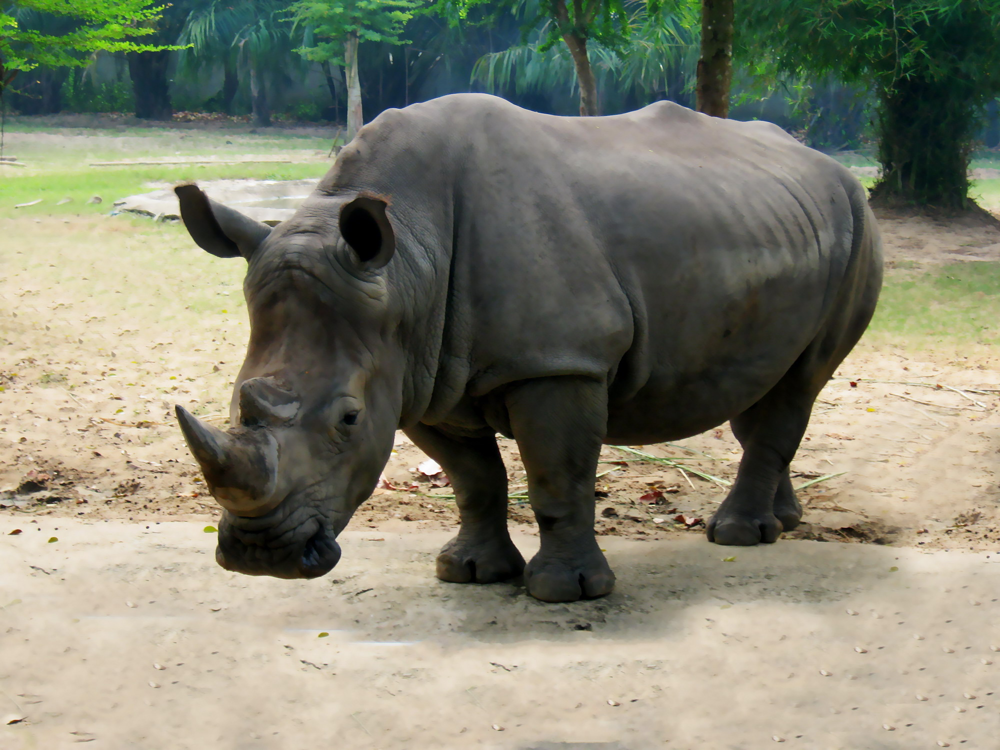
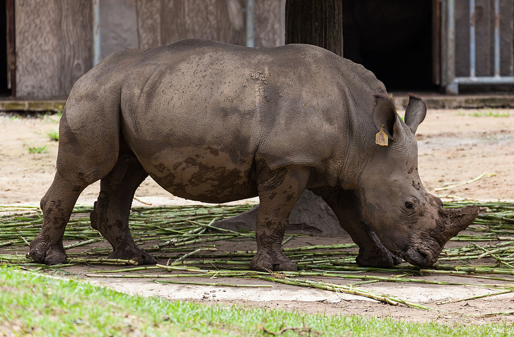

Tê Giác
Tê giác là các loài động vật nằm trong số 5 chi còn sống sót của động vật guốc lẻ trong họ Rhinocerotidae. Tất cả năm chi nói trên đều có nguồn gốc ở châu Phi hay châu Á. Đặc trưng nổi bật của động vật có sừng này là lớp da bảo vệ của chúng được tạo thành từ các lớp chất keo với độ dày tối ưu khoảng 4 inch được sắp xếp theo cấu trúc mắt lưới.

Một số loài tê giác chỉ mới tuyệt chủng trong thời gian địa chất gần đây, nổi tiếng nhất là Kỳ lân và tê giác lông tơ ở đại lục Á-Âu: nguyên nhân của sự tuyệt chủng này là do thay đổi khí hậu hay sự săn bắn của con người vẫn đang là vấn đề gây tranh cãi. Các chứng cứ hiện tại cho thấy chúng có lẽ đã sống sót qua nhiều thay đổi khí hậu cho đến khi người hiện đại xuất hiện.
Các động vật tương tự tê giác đã lần đầu tiên xuất hiện trong thế Eocen (34-56 triệu năm trước) như là các động vật có hình dáng ngoài thon thả, và vào thời kỳ cuối thế Miocen (5,3-23 triệu năm trước) đã tồn tại nhiều loài khác nhau. Phần lớn các loài này có bề ngoài đồ sộ. Một loài là Indricotherium đã cân nặng khoảng 30 tấn và (trong số các động vật đã biết) là một trong số các động vật lớn nhất trong số động vật có vú đã từng sống trên Trái Đất. Tê giác bị tuyệt chủng trong thời kỳ thế Pliocen (1,8-5,3 triệu năm trước) ở Bắc Mỹ, và trong thời kỳ thế Pleistocen (10.000 đến 1,8 triệu năm trước) ở Bắc Á và châu Âu.
Năm loài còn sống sót hiện nay thuộc về ba tông. Loài tê giác Sumatra đang ở tình trạng cực kỳ nguy cấp là đại diện duy nhất còn sống sót trong nhóm nguyên thủy nhất- Dicerorhinini- đã xuất hiện trong thế Miocen (khoảng 20 triệu năm trước). Loài tê giác lông tơ đã tuyệt chủng ở miền bắc châu Âu và châu Á cũng là thành viên của tông này. Còn hai loài thuộc tông Rhinocerotini vẫn đang sống sót là tê giác Ấn Độ (nguy cấp) và tê giác Java (cực kỳ nguy cấp), đã phân nhánh từ một gốc khác khoảng 10 triệu năm trước. Hai loài ở châu Phi là tê giác trắng và tê giác đen, đã phân nhánh trong thời kỳ đầu thế Pliocen (khoảng 5 triệu năm trước) nhưng chúng vẫn thuộc về nhóm Dicerotini ở giữa thế Miocen (khoảng 14 triệu năm trước). Khác biệt chính giữa tê giác trắng và tê giác đen là hình dạng môi/miệng của chúng. Tê giác trắng có các môi rộng và phẳng để gặm cỏ còn tê giác đen có các môi dài đầu nhọn để ăn lá cây. Tên gọi tê giác trắng trên thực tế là một sai lầm phổ biến xuất phát từ từ đồng âm trong tiếng Anh chỉ cái môi rộng của chúng.
Con lai của các phân loài tê giác trắng (Ceratotherium simum simum x Ceratotherium simum cottoni) đã sinh nở tại vườn thú Dvur Kralove (vườn bách thú Dvur Kralove nad Labem) tại Tiệp Khắc năm 1977.
